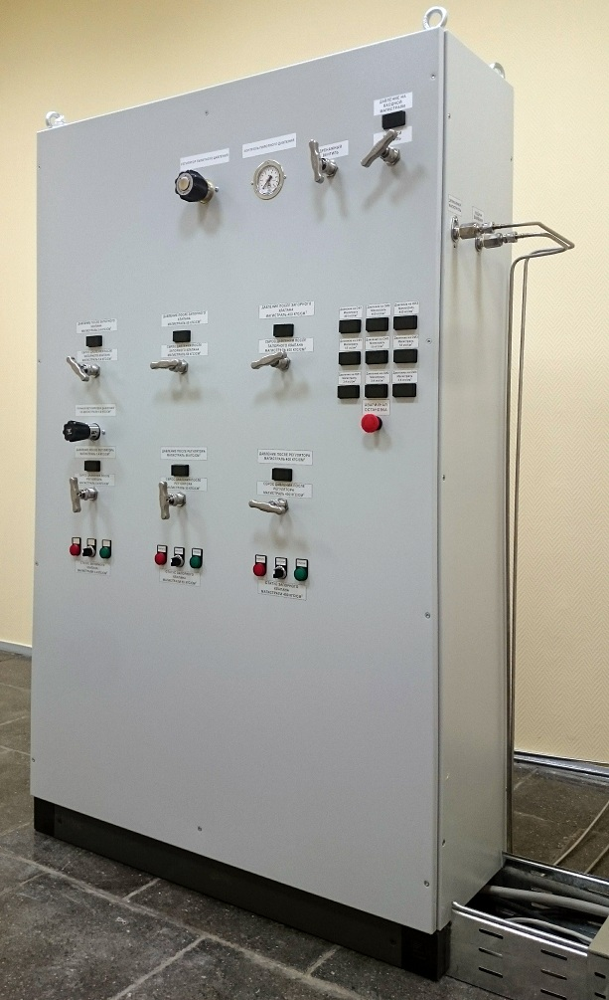
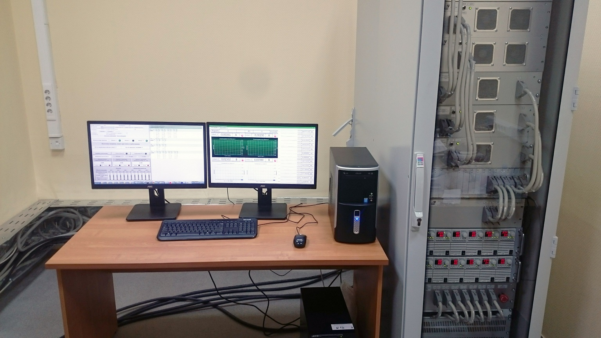
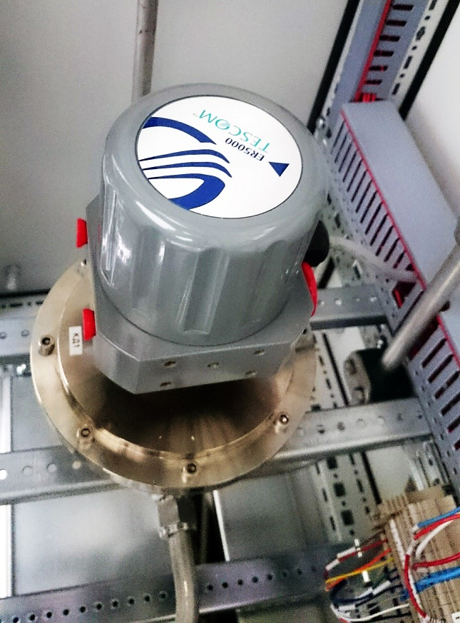
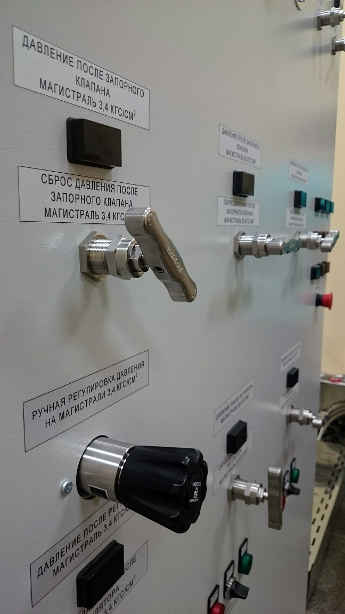
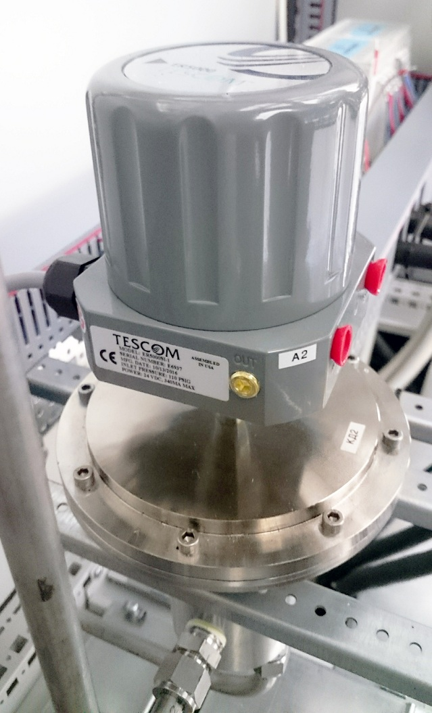
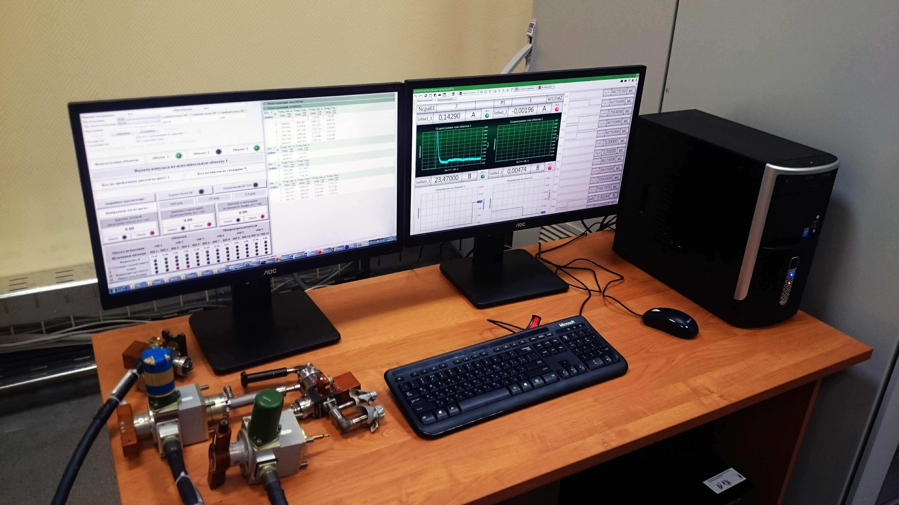
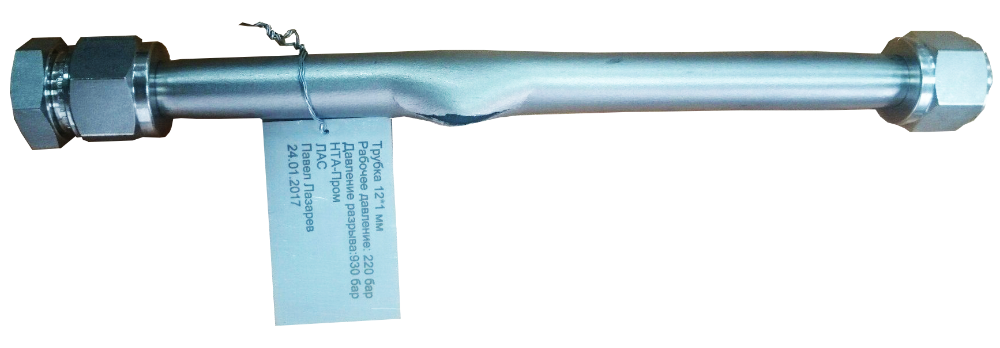

Точное поддержание давления обеспечивается применением контроллера ER5000, с датчиком давления в цепи обратной связи и цифровым интерфейсом к основному управляющему контроллеру. При этом пневмоконтроллер может обеспечивать не только поддержание заданного давления при проведении пневматических испытаний, но и его плавную подачу с заданной скоростью, предусмотрена возможность использования ручных органов регулировки давления.

В состав пневматических систем управления могут входить дополнительные устройства пневмоавтоматики, запорные электропневматические клапаны (ЭПК) и датчики давления, обеспечивающие быстродействующую защиту ответственных потребителей при возникновении нештатных ситуаций.
Управление пневмопультом осуществляется с помощью автоматизированного рабочего места (АРМ) оператора, обеспечивающего визуализацию технологического процесса пневматических испытаний, контроль за правильностью работы пневмоавтоматики и действий оператора, а также регистрацию хода техпроцесса, значений технологических параметров и действий оператора.
Системы для пневматических испытаний - изготавливаются с применением современных технологий создания пневматических и гидравлических систем без применения сварных соединений. Специализированные обжимные фитинги для пневмо и гидросистем обеспечивают монтаж трубопроводных пневматических систем на давления до 689 бар (68,9 МПа). Прочность таких соединений превышает прочность соответствующего трубопровода, при этом обеспечивается возможность обслуживания пневматических систем, демонтажа и повторного монтажа фитинговых соединений. Результат подачи давления в 930 бар на трубку, рассчитанную на давление 220 бар, можно увидеть на приведенном рисунке. В ходе подачи рабочего давления фитинги сохранили свои соединительные свойства, разрыв произошёл на самой трубке при давлении, превосходящем рабочее в более чем четыре раза.
Пневматические испытания с применением специализированных автоматизированных систем позволяют повысить точность соблюдения технологических регламентов, обеспечивают безопасность выполнения работ, минимизируют негативную роль «человеческого» фактора на качество выполняемых работ, снижают производственные риски, повышают качество работ, существенно снижают расход рабочих тел и заметно повышают эффективность производства.